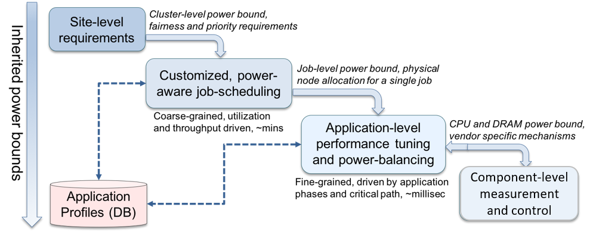

The landscape of high-performance computing (HPC) is changing as we enter the exascale era. Optimizing performance of scientific applications under power and energy constraints is challenging due to several reasons, such as the dynamic phase behavior of applications, processor manufacturing variability, and increasing heterogeneity of node-level components. While several scattered research efforts to manage power and energy exist, a majority of these efforts are site-specific, require programmer effort, and often result in suboptimal application performance and system throughput. Additionally, these interfaces are not designed to cooperate or work together in an integrated manner, creating conflicts between various layers of a software stack. A holistic, generalizable and extensible approach to power management is still missing in the HPC community.
Our goal is bring together experts from academia, research laboratories and industry in order to design a holistic and extensible power management framework, which we refer to as the PowerStack. The PowerStack explores hierarchical interfaces for power management at three specific levels: batch job schedulers, job-level runtime systems, and node-level managers. Each level will provide options for adaptive management depending on requirements of the supercomputing site under consideration. Site-specific requirements such as cluster-level power bounds, user fairness, or job priorities will be translated as inputs to the job scheduler. The job scheduler will choose power-aware scheduling plugins to ensure compliance, with the primary responsibility being management of allocations across multiple users and diverse workloads. Such allocations (physical nodes and job-level power bounds) will serve as inputs to a fine-grained, job-level runtime system to manage specific application ranks, in-turn relying on vendor-agnostic node-level measurement and control mechanisms. The figure below presents an overview of the envisioned PowerStack, which takes a holistic approach to power management.

Design and development of the PowerStack in a scalable, conflict-free and
low-overhead manner presents several challenges. Some of these challenges,
which are being actively defined and developed, are listed below:
- Holistically coordinate power optimizations across the whole system in a scalable manner
- Ensure safe operation within electrical operating parameters, must include protective layers to enable scenarios where system power caps are hard limits that must be enforced at all times
- Implementations must be open-source with a flexible (not-sticky) software license to enable commercial as well as research uses
- Must be cross-platform to avoid locking users to hardware from a specific vendor
- Must be production-grade and easily deployable through standard package management interfaces
- Must be extensible (e.g. through plugins) to support diverse preferences at different HPC centers and facilitate rapid prototyping of new power, energy or performance optimization techniques
- Must be able to integrate components from multiple vendors and developers using a set of well-defined and possibly standardized interfaces
- Must support real-time monitoring and control in order to adapt to dynamic scenarios. These can be system-level (more or less power at the system level due to power supply or node failures), or application-level (critical path, CPU/memory boundedness, manufacturing variation in the allocation, load imbalance, etc.)
Core Committee Members (alphabetical order)
- Stephanie Brink, Lawrence Livermore National Laboratory, USA
- Christopher Cantalupo, Intel Corporation, USA
- Jonathan Eastep, Intel Corporation, USA
- Siddhartha Jana, Energy Efficient High Performance Computing Working Group, Global
- Masaaki Kondo, University of Tokyo, Japan
- Matthias Maiterth, Ludwig-Maximilians University, Germany
- Aniruddha Marathe, Lawrence Livermore National Laboratory, USA
- Tapasya Patki, Lawrence Livermore National Laboratory, USA
- Barry Rountree, Lawrence Livermore National Laboratory, USA
- Ryuichi Sakamoto, University of Tokyo, Japan
- Martin Schulz, Technical University Munich, Germany
- Carsten Trinitis, Technical University Munich, Germany
Contact
Martin Schulz, schulzm - at - in.tum.de